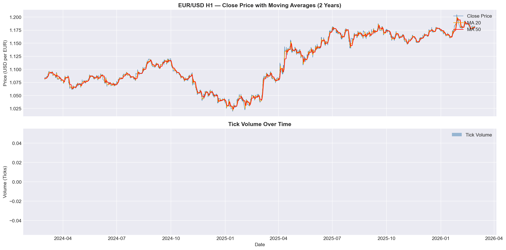
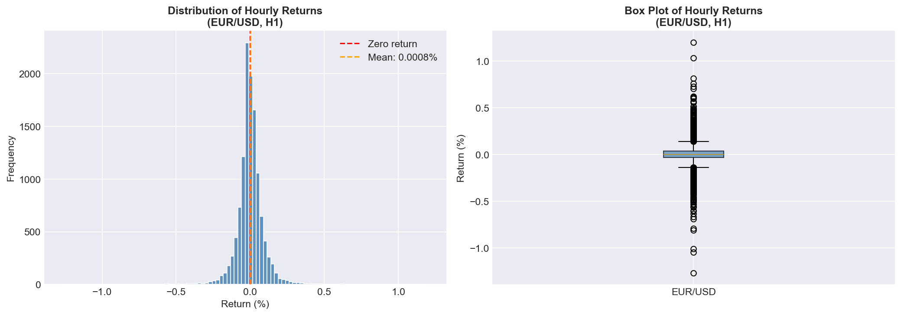
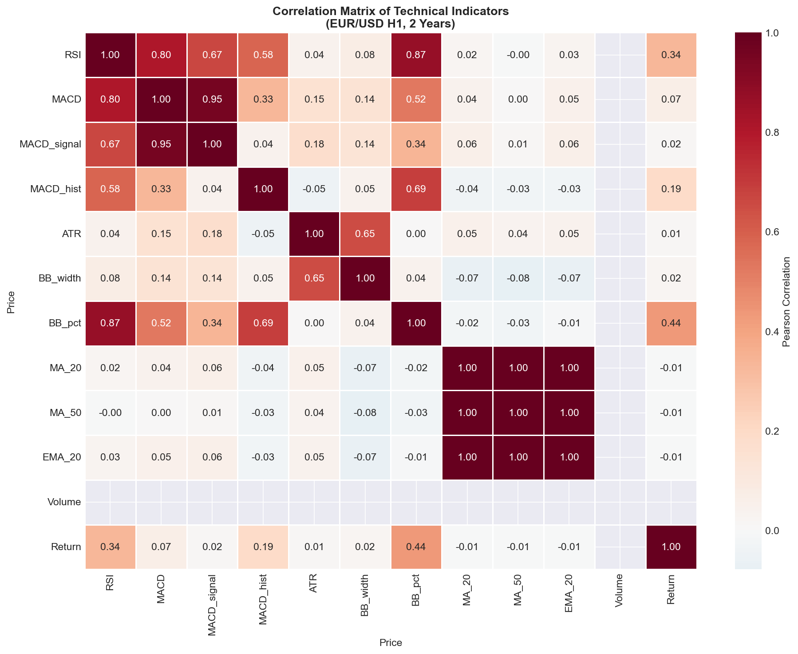
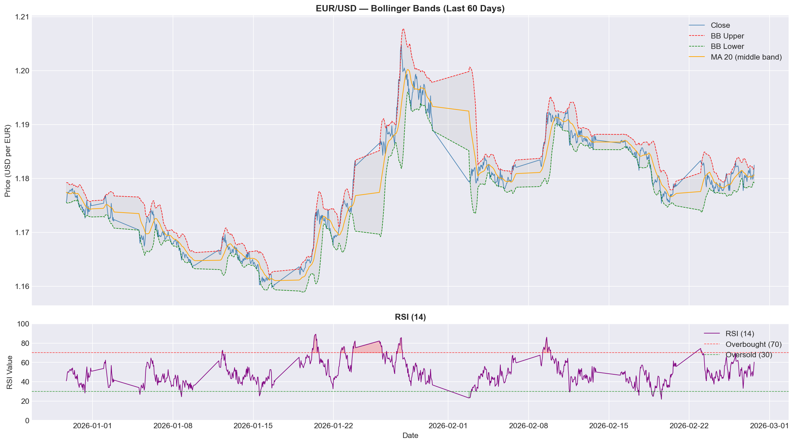
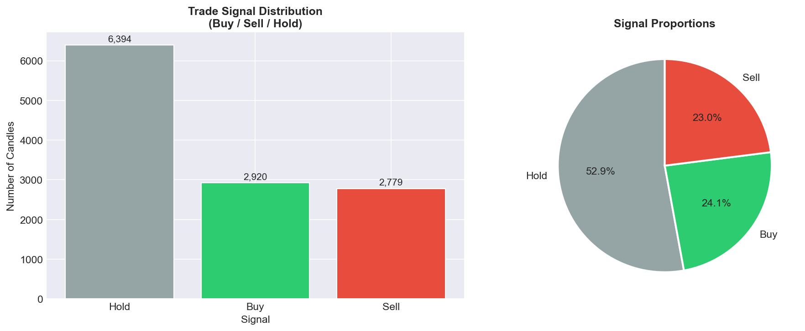
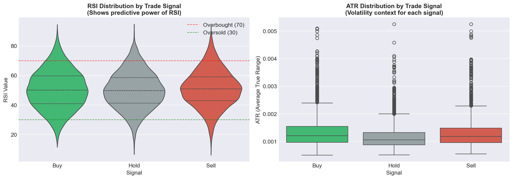

Forex Auto-Trading Bot
EUR/USD
Exploratory Data Analysis
The Problem
24/7 Market
Forex trades 24 hours a day, 5 days a week. The best sessions (London, New York) happen while I'm asleep in Mongolia (GMT+8).
Emotional Trading
Manual trading leads to fear and greed-based decisions. Consistent execution of a strategy is nearly impossible by hand.
The Solution
An ML model that reads technical indicators every hour and classifies the market as Buy, Sell, or Hold — then executes automatically via MT5.
Why EDA First?
Before training any model, I need to understand the data — its patterns, distributions, and which features actually carry predictive signal.
Data Acquisition
| Column | Description | Example |
|---|---|---|
| Open | Price at the start of the hour | 1.08234 |
| High | Highest price during the hour | 1.08301 |
| Low | Lowest price during the hour | 1.08190 |
| Close | Price at the end of the hour | 1.08267 |
| Volume | Always 0 for forex (no central exchange) | 0 |
Source: Yahoo Finance via yfinance · Instrument: EURUSD=X · No API key required
Data Quality
- No missing values in OHLC columns — clean fetch from Yahoo Finance.
- No duplicate timestamps — each row is a unique hourly candle.
- OHLC sanity checks passed — High ≥ Low, Open and Close within range on all rows.
- Volume = 0 is expected — forex has no centralized exchange, so tick volume from Yahoo is always 0.
- Price "outliers" kept — large moves (e.g., macro events) are real data, not errors. Removing them would bias the model.
Dataset is Clean
No rows removed. Ready for feature engineering.
Feature Engineering
Moving Averages
MA-20, MA-50, EMA-20 — capture the trend direction over different time windows.
RSI (14)
Relative Strength Index — measures momentum. Above 70 = overbought, below 30 = oversold.
MACD
Moving Average Convergence Divergence — shows trend strength and direction changes.
Bollinger Bands
Upper/lower bands around MA-20. Price near the bands signals potential reversals.
ATR (14)
Average True Range — measures volatility. Higher ATR = larger price swings expected.
Labels
Buy / Sell / Hold based on price movement 5 candles ahead with a 0.1% threshold.
Price History — Time/Trend

- 2 years of EUR/USD — clear trending phases visible.
- MA-20 and MA-50 crossovers align with directional moves — foundation of classic strategies.
- Volume plot shows activity spikes around major market events.
Return Distribution — Distribution

- Returns are centered near zero — most hours see tiny moves.
- Fat tails — large spikes happen more often than a normal distribution predicts.
- The model needs to be robust to rare extreme events — XGBoost handles this better than linear models.
Volatility Patterns — Categorical

- London/NY overlap (13:00-17:00 UTC) is the most volatile period — best trading window.
- Wednesday & Thursday are the most active days.
- Hour of day and day of week should be added as model features — the market behaves very differently by session.
Correlation Heatmap — Relationship

- MA-20, MA-50, EMA-20 are highly correlated — all track price closely.
- MACD and MACD_signal are correlated — prefer using MACD_hist to reduce redundancy.
- This is why I chose XGBoost over a linear model — tree-based models handle correlated features natively.
Bollinger Bands + RSI — Additional

- Price touching the upper band + RSI above 70 often precedes a pullback.
- Price at the lower band + RSI below 30 often precedes a bounce.
- The ML model should learn these combined conditions better than simple rules.
Label Distribution & RSI by Signal

If Hold dominates → use class weighting or SMOTE to balance.

Buy signals cluster at lower RSI, Sell at higher → RSI has predictive power.
Key Insights
What's Next — Checkpoint 3
Checkpoint 2 — EDA
Data collection, quality, feature engineering, 7 visualizations, insights
Checkpoint 3 — MVP (Week 8)
Train XGBoost classifier · Compare against RSI rule-based baseline · Evaluate with F1-score · Address class imbalance
Checkpoint 4 — Prototype (Week 11)
Streamlit dashboard + MT5 bot integration + live paper trading